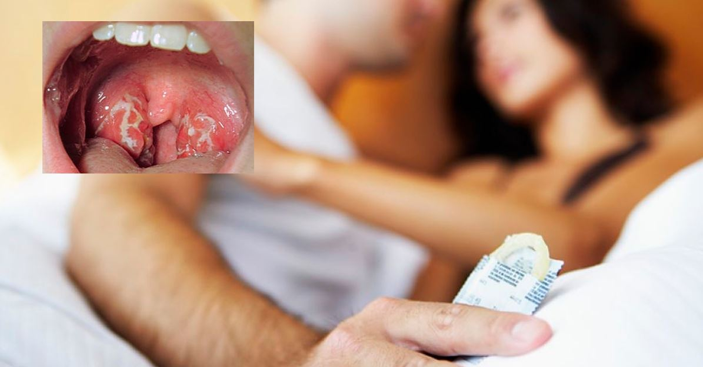
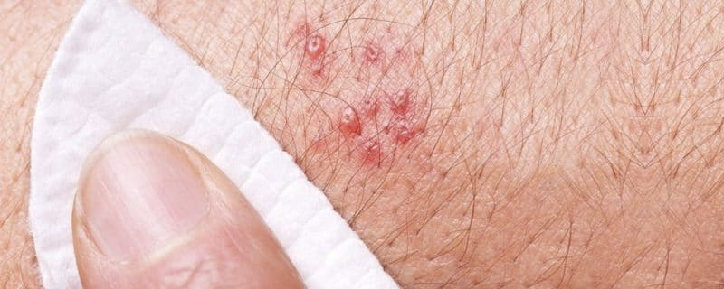
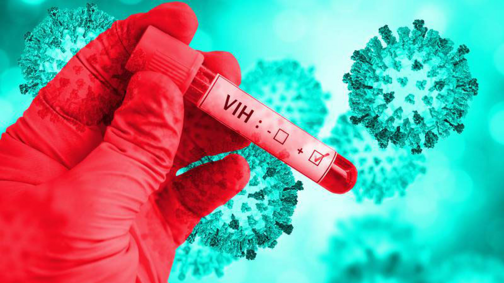
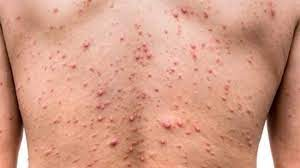
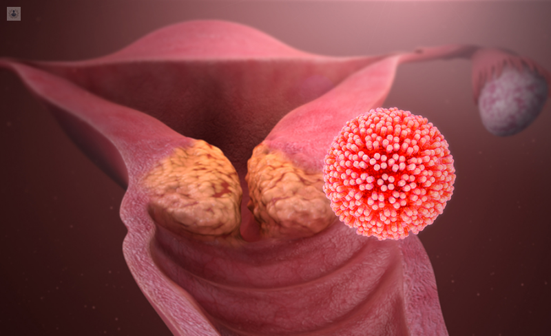
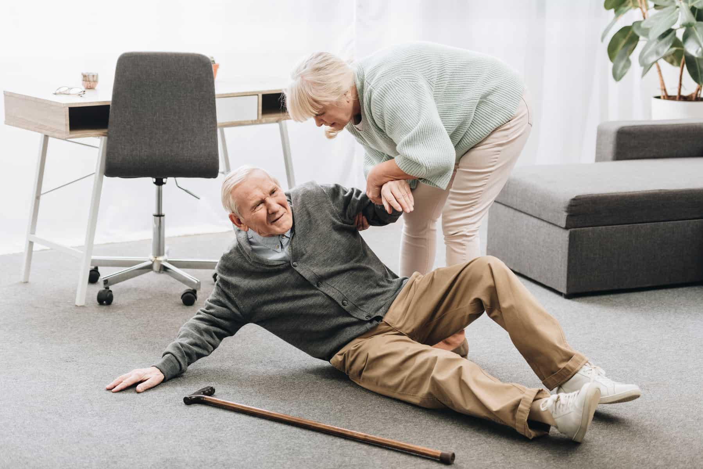

UNIVERSIDAD AUTONOMA DE SINALOA
FACULTAD DE ENFERMERIA MOCHIS
UNIDAD REGIONAL NORTE
Asignatura
Enermeria en familia y comunidad
Docente
Macarena Padilla Monica
Alumnas
Armenta Zavala María Azucena
Castro Armenta Nadia Fernanda
Bojórquez Zepeda María Esther
Hernández LaChica Diana Lizbeth
Grupo
1-04
Criterios para coevaluacion de temas de educacion para la salud
Higiene de manos
Concepto
Aseo, la limpieza y el cuidado de nuestro cuerpo(en este casomanos),para mejorar tu salud,conservarla y prevenir enfermedades de una manera correcta; Frotando las palmas de las manos, dorso, interdigitales, uñas, pulgares;con agua y jabón.
De acuerdo con el estudio de la Organización Mundial de la Salud, sólo por una inadecuada higiene de manos, mueren 5,026 personas por año a causa de diarrea, mientras que hacerlo correctamente reduce 23% elriesgo de contraer enfermedades. En México, sólo el 34% de los niños se lavan las manos Cada año, mueren más de 5 mil personas en América Latina a causa de diarrea provocada por un inadecuado lavado de manos.
Higiene personal
Concepto
Problemas de salud relacionados
Es el concepto básico del aseo, de la limpieza y del cuidado del cuerpo humano. Son una serie de hábitos relacionados con el cuidado personal que inciden positivamente en la salud y que previene posibles enfermedades e infecciones. Esto con ayuda de un buen aseo personal del cuerpo completo, así evitas enfermedades y tienes más comodidad en tu persona.
Las infecciones de la piel y uñas, la diarrea, la conjuntivitis, el cólera, la influenza o gripe común, entre otros.
Salud bucal
Concepto
Problemas de salud relacionados
La salud bucal, tambien llamada salud bucal, afecta todos los aspectos de nuestras vidas, ya menudo la damos por sentado tu boca es una ventana a la salud de tu cuerpo. Puede mostrar signos deficiencias nutricionales o infeccion general. Las enfermedades aquellos sistémicos que sucede a todo el cuerpo, pueden manifestarse primero debido a lesiones en la boca u otros problemas orales.
La acumulación de biofilm dental provoca la aparición de las dos patologías bucales más frecuentes en niños: caries y gingivitis. • 0-2 años. En esta franja de edad erupciones los dientes temporales (dientes de leche) y las encías pueden presentar una ligera inflamación e irritación. Desde la aparición del primer diente es necesario empezar a realizar el cepillado dental. La higiene bucal es realizada por un adulto. • 2-6 años. Los niños ya tienen todos los dientes de leche. El principal objetivo es eliminar el biofilm dental para prevenir la caries y, sobre todo, que los niños adquieran el hábito de la higiene bucal, que debe ser supervisado y repasado por un adulto
Adolescentes
El conjunto de acciones de salud que debes otorgar a los adolescentes de 10 a 19 años, independientemente del motivo de la atención, es el siguiente:
Entrega o actualiza la Cartilla Nacional de Salud Adolescentes de 10 a 19 años; revisar esquema de vacunación y, si corresponde, aplicar biológico.
Realiza exploración física completa.
Realiza detección de defectos visuales.
Orienta sobre salud sexual y reproductiva. Informa sobre métodos anticonceptivos y promueve el uso de condones.
Verifica riesgo de TB y, en presencia de tos y flemas, toma muestra para baciloscopia.
Administra quimioprofilaxis para tuberculosis pulmonar.
Evalúa estado nutricional y proporciona orientación alimentaria.
Identifica casos de adicciones y refiere a Centros Nueva Vida del condice.
Promueve actividad física, salud bucal y prevención de accidentes.
Detecta violencia; orienta y refiere casos.
Entrega o actualiza la Cartilla Nacional de Salud Adolescentes de 10 a 19 años.
La Cartilla Nacional de Salud Adolescentes de 10 a 19 años es un instrumento que permite registrar acciones preventivas y de promoción para el cuidado de la salud de este grupo de edad.
Exploracion fisica completa
Realiza detección de defectos visuales.
Debes realizar la exploración física de las o los adolescentes, bajo los principios éticos y profesionales, acompañándote de personal de enfermería o de algún familiar del paciente. Proporciona siempre a éste y a su acompañante, información sobre el procedimiento que estás realizando. Lávate las manos antes y después de realizar esta actividad. En la exploración física debes considerar: inspección, palpación, percusión y auscultación.
Otorgar tratamiento temprano a los problemas de agudeza visual evitará discapacidades futuras y favorecerá el rendimiento escolar y demás actividades.
Orienta sobre salud sexual y reproductiva.
Involucra aspectos de carácter biológico, psicológico, sociológico y cultural. Los problemas de los adolescentes en relación con su salud sexual y reproductiva son variados y complejos; entre ellos destacan prácticas sexuales de riesgo, embarazos no deseados y las infecciones de transmisión sexual. Los adolescentes deben recibir orientación e información sobre desarrollo y sexualidad para fomentar su corresponsabilidad en el cuidado de su salud, dentro de un marco de pleno respeto a los derechos sexuales y reproductivos, alejados de contextos de riesgo.
Enfermedades de transimision sexual
Las enfermedades de transmisión sexual (ETS), son infecciones que se contagian de una persona a otra usualmente durante el sexo vaginal, anal u oral. A veces pueden transmitirse a través de otro contacto físico íntimo. Esto se debe a que algunas ETS, como el herpes y el VPH, se transmiten por contacto de piel a piel. Son muy comunes y muchas personas con ETS no tienen síntomas, sin tratamiento, las enfermedades de transmisión sexual pueden causar serios problemas de salud.
Gonorrea
Herpes
VIH
Es producida por una bacteria que puede infectar el tracto genital, la boca o el ano. Es más común en los adultos jóvenes. En los hombres, la gonorrea puede causar dolor al orinar y secreción proveniente del pene. De no tratarse, puede causar problemas en la próstata y testículos.

El herpes genital es causado por un virus. La mayoría de las personas infectadas no presentan signos, o presentan síntomas mínimos. En caso contrario, aparecen ampollas en los genitales o el recto, o alrededor de los mismos, y se rompen formando úlceras dolorosas que pueden tardar de 2 a 4 semanas en sanar.

Según estima la Organización Mundial de la Salud (OMS) el Virus de Inmunodeficiencia Humana (VIH) es uno de los agentes infecciosos de más alto contagio, que en los tres últimos decenios se ha cobrado más de 25 millones de vidas.

Sífilis
Virus de Papiloma Humano (VPH)
La sífilis es otra de las enfermedades de transmisión sexual causada por una bacteria. Se transmite durante las relaciones sexuales vaginales, anales u orales. A menudo se le ha llamado “la gran imitadora” porque comparte signos y síntomas con muchas otras enfermedades.

Existen más de 100 tipos de VPH. La mayoría son inofensivos, pero aproximadamente 30 tipos se asocian con un mayor riesgo de cáncer cervical. Estos tipos afectan los genitales y se adquieren a través del contacto sexual con una pareja infectada. Se clasifican como de bajo riesgo o de alto riesgo, informan los Institutos Nacionales de Salud (NIH).

INFORMA SOBRE MÉTODOS ANTICONCEPTIVOS Y PROMUEVE EL USO DE CONDONES
Verifica riesgo de TB y, en presencia de tos y flema, toma muestra para baciloscopia.
Proporcionar información sobre métodos anticonceptivos y sobre el uso del condón, basada en la mejor evidencia científica disponible, obedece al respeto hacia los derechos sexuales y reproductivos y permite a las y los adolescentes corresponsabilizarse de su salud al elegir el método más adecuado a sus necesidades.
La tuberculosis pulmonar (confirmada por baciloscopia) es la fuente de infección más frecuente y constituye el objetivo fundamental de las actividades de detección, diagnóstico y tratamiento para el control de la enfermedad. A toda persona que presente tos con flema y/o sangre es necesario realizarle cuanto antes una baciloscopia. En caso de resultar positiva, anota la fecha de inicio y de fin de tratamiento en la Cartilla Nacional de Salud Adolescentes de 10 a 19 años.
Administra quimioprofilaxis para tuberculosis pulmonar.
Para proteger a todas las y los adolescentes que tengan contacto con enfermos de tuberculosis pulmonar. Se administra durante 12 meses a los contactos de tuberculosis de 15 años o más, con infección por VIH o con otra causa de Inmunodeficiencia. Previamente debe descartarse tuberculosis.
Evalúa estado nutricional y proporciona orientación alimentaria.
Factores que influyen a una mala alimentación
Falta de tiempo:
Los estudiantes al tener mayor responsabilidades en su estudio a veces descuidan la alimentación.
Economía:
Algunos adolescentes son de bajo nivel socioeconómico por lo que a veces no comen por no tener dinero para comprar.
Influencia publicitaria:
Televisión, radio, panorámicos, prensa, Internet, etc.
Influencia social:
Colegio, amigos, centros comerciales, etc.
Las principales enfermedades de las y los adultos mayores son:
ndependientemente del motivo de la consulta, proporciona a las y los adultos mayores las siguientes acciones:
Diabetes mellitus
Enfermedades del corazón
Tumores malignos
Padecimientos cerebro-vasculares.
Entrega y/o actualiza la Cartilla Nacional de Salud del Adulto Mayor Personas de 60 años y más.
Identifica deficiencias visuales y auditivas y promueve salud bucal.
Informa sobre cáncer cérvico-uterino y, si corresponde, toma Papanicolau
Informa sobre cáncer de mama, realiza exploración mamaria y, en su caso, prescribe mastografía.
Promueve actividad física y prevención de accidentes con énfasis en caídas.
Detecta y refiere casos de violencia familiar.
Entrega y/o actualiza la Cartilla Nacional
Revisa la Cartilla Nacional de Salud del Adulto Mayor Personas de 60 años y más; si falta alguna vacuna, aplica el biológico correspondiente.
Es importante sensibilizar a las y los adultos mayores para que cada vez que acudan a la unidad de salud lleven consigo su Cartilla Nacional de Salud.
En caso de pérdida de la cartilla, entrega un comprobante de vacunación e indica la solicitud de una nueva en la unidad de salud donde iniciaron el esquema de vacunación; pide que entregue el comprobante para su actualizacion.
Registra en el Expediente Clínico, en los Formatos de Registro de Seguimiento del Paquete Garantizado de Servicios de Promoción y Prevención y en la Cartilla Nacional de Salud del Adulto Mayor Personas de 60 años y más.
Influenza:
se aplica una dosis de o.5 ml durante la temporada pre e invernal, su vía de aplicación es intramuscular en la inserción del musculo deltoides (tercio medio del brazo),los efectos adversos pos-vacunales son generalmente dolor en el sitio de aplicación, ligera inflamación e incremento de la temperatura en dicha zona. Su contraindicación es que la persona sea alérgica al huevo.
Neumonía Neumococica:
es una sola dosis de 0.5 ml intramuscular en la misma zona de la vacuna contra la influenza pero en el brazo contrario, se realiza una revacunación a los cinco años, los efectos adversos de esta vacuna son similares a los de la vacuna antes mencionada.
Toxoide Tetánico Diftérico:
el esquema es de dos dosis con intervalo de cuatro semanas entre la primera y la segunda, la vía de administración también es intramuscular en la región glútea o en el antebrazo. Se aplica una revacunación a los 10 años de aplicada la primera.
Identifica deficiencias auditivas, visuales y auditivas y promueve la salud bucal.
Con la edad pueden llegar cambios en nuestro organismo. Algunos de ellos pueden ser muy significativos para las personas mayores. Los problemas auditivos y visuales son algunos de ellos.
La vejez puede causar pérdidas en nuestra visión y audición llegando a ser menos agudos y afectando a la calidad de vida de las personas mayores. Los problemas auditivos y visuales afectan a la vida cotidiana del anciano y a su comunicación.
Síntomas de la pérdida de audición
Tratamientos para disminuir los problemas auditivos.
La dificultad de no entender correctamente la conversación
Zumbidos o ruidos molestos en los oídos.
No escuchar correctamente la televisión y poner el volumen a un nivel muy alto.
Dificultades para comunicarse en grupo, pedir de manera constante a otras personas que repita lo último que ha dicho.
No escuchar el timbre de la puerta o el teléfono o tener que concentrarse para mantener de manera fluida una conversación.
Implante colear:
Se trata de un aparato que se implementa en el oído a través de cirugía.
La diferencia con los audífonos es que el implante amplifica el sonido a mayor alcance.
Audífonos:
Los audífonos son pequeños aparatos que se introducen tanto en el interior de la oreja o fuera de esta. Tienen grandes beneficios como la mejora en la comprensión en las conversaciones, disminuyen los llamados ‘’zumbidos’’. Los audífonos más utilizados son los de oído abierto debido a todas las características que ofrece.
Procedimientos quirúrgicos:
La sordera puede originarse también a través de diversas infecciones. En este caso la solución es drenar los oídos.
Promueve la salud bucal
A medida que uno se hace mayor, resulta aún más importante cuidar los dientes y la salud bucodental. La boca cambia a medida que se envejece. Los nervios de los dientes pueden hacerse más pequeños, con lo que los dientes son menos sensibles a la caries u otros problemas. Si no se hace revisiones dentales con regularidad, esto podría llevar a su vez a que los problemas no se diagnostiquen hasta que sea demasiado tarde.
Detección de placa bacteriana
Revisión de higiene de prótesis
Técnica de cepillado
El examen de identificación de la placa dental en el hogar muestra en dónde se acumula dicha placa. Esto le ayuda a saber qué tan bien se está cepillando y usando el hilo dental. La placa es la mayor causa de caries dental y de la enfermedad de las encías
Informa sobre la importancia de lavar la prótesis después de cada comida con cepillo y pasta dental o jabón, y lavarla y colocarla en un vaso con agua antes de dormir.
Instruye sobre la técnica correcta de cepillado dental, enfatizando que: el cepillo se coloca entre el diente y la encía, haciendo movimientos de barrido en todas las superficies dentales, de arriba hacia abajo en los dientes superiores y de abajo hacia arriba en los inferiores,la superficie de los molares se limpia con movimientos circulares,la lengua se cepilla de atrás hacia delante.
Informa sobre el riesgo de consumo de alcohol, tabaco y otras drogas.
Es importante generar conciencia y sensibilizar a las personas mayores de 60 años y más sobre los daños que puede traer a su calidad de vida el consumo de sustancias psicoactivas como alcohol, tabaco y otras drogas. Si las y los adulos mayores se encuentran en un ambiente de amor y seguridad, será difícil que lleguen a consumir drogas. El alcohol agudiza el problema nutricional por la pérdida de minerales y proteínas y provoca alteraciones en las células cerebrales.
La enfermedad hepática alcohólica comprende diferentes manifestaciones, que va desde un hígado graso asintomático hasta Hepatitis alcohólica y cirrosis hepática descompasada con ascitis, hemorragia digestiva por varices o encefalopatía.
El tabaquismo es capaz de controlar la conducta del individuo, causa daños a las y los fumadores y a quienes conviven con ellos. Produce cáncer de pulmón, laringe, y en menor proporción, de boca, páncreas, estómago y cuello del útero: también produce enfermedad cerebrovascular y enfermedad pulmonar obstructiva crónica (EPOC).
Promueve actividad física y prevención de accidentes, con énfasis en caídas
La actividad física en las y los adultos mayores contribuye a prevenir riesgo de caídas, fracturas y pérdida ósea, mediante el fortalecimiento de huesos y músculos, la mejoría de la agilidad y flexibilidad; también favorece el bienestar psicológico y permite conservar las habilidades para una vida independiente.
Si la persona presenta hipertensión arterial o diabetes mellitus, comprueba que estas enfermedades se encuentren controladas.
Evalúa los trastornos de la marcha y el equilibrio.
Coméntale que deberá iniciar el ejercicio poco a poco, con rutinas no mayores de 5, 10 o 15 minutos, hasta acumular al menos 30 minutos diarios, en sesiones de 1, 2 o 3 veces por semana, de acuerdo con su condición física, e ir incrementándolo paulatinamente, sin agitarse nunca
Indícale que siempre realice una fase de calentamiento y otra de enfriamiento ,en forma muy suave.
Recomiéndale actividades como: caminar, bailar, realizar jardinería, excursiones, estiramientos estiramiento o sesiones de ejercicio organizadas.

Detecta y refiere casos de violencia familiar
La violencia familiar en los adultos mayores constituye una violación de los derechos humanos y puede presentarse en forma de maltrato físico, sexual, psicológico o emocional; se ocasiona por razones económicas o materiales; abandono; desatención, y menoscabo grave de la dignidad y falta de respeto.
Como detectar la violencia:
cuando el adulto cuenta con signos de maltrato como lo son las fracturas, malnutrición, deshidratación, ulceras por presión, en ocasiones abuso sexual, cambio de comportamientos, lesiones en la piel, cuando ellos están deprimidos.